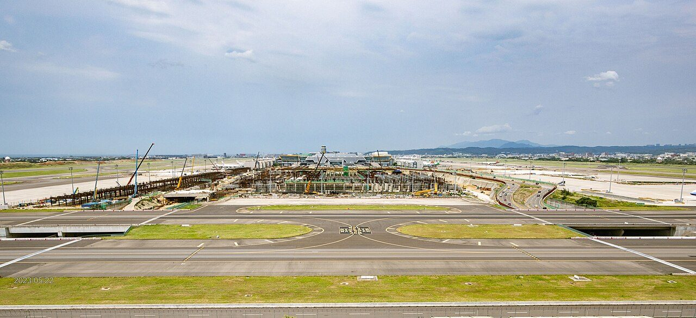
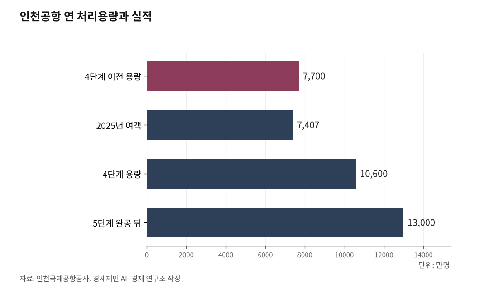

[세계3위 인천공항미래⑨] 인천공항 2033년 포화, 5단계는 지금 삽 떠야 한다
4단계로 연 1억600만명 갖췄지만 가동률 70%, 빈자리가 3할이다
그러나 설계·건설에 7~8년, 2027년 착공해야 2033년 포화에 겨우 맞춘다
인하대 해양AI융합센터 김갑봉 연구교수
AI경세제민=김갑봉 기자 | 인천공항은 4단계로 연 1억600만명 용량을 갖췄다. 그러나 두 과제가 한꺼번에 온다. 더 큰 그릇과 잘 채운 그릇이다. 둘은 모순이 아니라 한 쌍이다.

빈 그릇이 3할인데 왜 또 짓느냐고 물을 수 있다. 그러나 공항은 짓는 데만 7~8년이 걸린다. 채우는 일과 키우는 일을 동시에 밀지 않으면, 수요가 차오르는 2033년에 그릇이 모자란다. 잘 채우면서도 제때 키워야 하는 까닭이다.
4단계로 1억 그릇 깔았지만 3할이 비었다
인천공항은 2024년 4단계 건설을 마쳐 12월 3일 정식 운영에 들어갔다. 제2여객터미널을 동서로 넓히고 제4활주로를 더했다. 연 여객 처리용량이 7700만명에서 1억600만명으로 37.6% 늘었다. 화물 용량은 500만톤에서 630만톤으로, 연 운항은 50만회에서 60만회로 커졌다. 그릇은 세계 3위 규모로 넓어졌다.
그릇을 키웠다고 다 채운 것은 아니다. 2025년 여객은 7407만명이다. 1억600만명 용량으로 나누면 가동률이 약 70%다. 빈자리가 3할이다.
다만 연평균 70%라는 숫자에 안심하면 안 된다. 항공 수요는 하루 중 아침과 저녁, 한 해 중 성수기에 몰린다. 연평균이 70%라도 여객이 몰리는 첨두시간에는 여유가 크게 줄어든다. 평균값 하나로 시설이 넉넉하다고 보면 실제 혼잡을 놓친다. 평균과 첨두를 갈라 봐야 하는 이유다.
그래서 순서는 분명하다. 더 큰 그릇을 논하기 전에 가진 그릇부터 채운다. 채우는 길은 효율이다. 갈아타는 손님을 늘리는 환승, 한낮에 몰린 운항을 새벽과 심야로 펴는 시간대 분산, 슬롯을 촘촘히 쓰는 운영이다. 같은 시설에서 더 많은 물동량과 부가가치를 뽑는 일이다.

크기로는 못 이긴다
키우는 데도 방향이 있다. 두바이 알막툼국제공항(DWC)은 최종 2억6000만명을 바라본다. 싱가포르 창이공항(SIN)은 제5터미널로 1억4000만명을 갖춘다. 인천은 5단계까지 지어도 1억3000만명 안팎이다. 알막툼의 절반에 못 미친다.
크기로 다투면 진다. 그래서 5단계도 크기 경쟁이 아니다. 환승을 두껍게 하고 화물을 더 받는 그릇이어야 한다. 승부처는 규모가 아니라 효율과 환승이다.
그럼에도 5단계는 필요하다, 2033년이 시한이다
효율만으로는 한계가 온다. 가동률이 차오르면 새 활주로와 터미널이 있어야 환승과 화물을 더 받는다. 5단계는 자유무역지역 클럽72 골프장 자리에 길이 3400m 제5활주로를 놓고, 제2활주로 남단에 2000만명 규모 제3여객터미널을 짓는 사업이다. 사업비는 약 6조원이다. 완공하면 수용력이 1억3000만명으로 는다.
재원은 감당할 수 있다. 인천공항은 1~4단계 18조170억원 가운데 82%를 공사채와 자체 수입으로 조달했다. 국고는 18%뿐이었다. 2007년부터 2024년까지 국가에 돌려준 누적배당이 3조269억원이다. 18조원을 82% 자체조달한 공사가 6조원을 감당하지 못할 이유는 없다.
문제는 시한이다. 공항은 설계에서 완공까지 7~8년이 걸린다. 제6차 공항개발종합계획은 2033년이면 인천 여객 수요가 현재 용량 1억600만명에 도달한다고 봤다. 공사는 5단계가 계획에 반영되면 2027년 착공해 2033년 완공한다는 일정을 세웠다. 수요가 용량에 닿는 바로 그 해다. 지금 첫 단추를 끼워도 빠듯하다. 인천공항은 3단계가 2년 늦어져 2016년 수하물 대란을 겪은 전례가 있다. 인프라가 수요를 못 따라가면 어떤 일이 벌어지는지 이미 치렀다.
밖에도 교훈이 있다. 유럽 최대 국제여객 공항인 런던 히스로공항조차 소음과 재원 문제로 확장을 거듭 미뤄오다, 2025년 8월에야 490억파운드(약 90조원)를 들여 제3활주로를 놓는 확장안을 내놨다. 활주로 가동은 빨라야 2035년이다. 최대 허브도 때를 놓치면 이렇게 뒤늦게 쫓아간다. 한 번 밀린 시점은 되돌리기 어렵다.
그런데 5단계는 정부가 2026년 확정할 제7차 공항개발종합계획(2026~2030)에 반영돼야 추진할 수 있다. 정부는 가덕도신공항과 대구경북통합공항 등 지방공항 건설과 연계성을 본 뒤 반영 여부를 정하겠다는 입장이다. 2025년 12월 제4차 항공정책기본계획에서는 5단계가 "용량이 부족하면 확장한다"는 조건부 문구로 물러섰고, 허브 강화 표현도 약해졌다. 인천에서는 후퇴로 읽는다. 인천경실련 등 시민단체는 제7차 계획에 5단계를 또렷이 반영하라고 촉구했다(경기일보·인천경실련). 계획에서 빠지면 착공이 늦어지고, 늦어지면 가동률이 한계에 닿는 2033년과 어긋난다. 시한이 박힌 입법·예산 과제다.
사장이 할 일
두 일을 동시에 한다. 밖으로는 5단계를 제7차 계획에 반영하라고 정부와 국회에 또렷이 요청한다. 근거는 국가 경제다. 인천공항의 생산유발효과는 2024년 67조원으로 국내총생산의 2.6%이고, 인천 지역만 보면 48조원으로 지역내총생산의 39%다. 인천 경제의 4할이 공항에 걸렸다. 5단계 지연은 인천 경제의 성장판을 닫는 일이다.
지방공항과의 관계도 명확히 해야 한다. 5단계는 지방공항과 수요를 다투는 사업이 아니다. 인천이 동북아 환승과 국제 화물을 키우고, 지방공항이 권역 수요를 맡는 역할 분담이다. 통합이 아니라 권역별 분권으로 가야 둘 다 산다는 논의는 거버넌스 편에서 따로 짚었다. 5단계는 그 분권 구도 위에서 인천이 맡을 국가 관문의 그릇이다.
안으로는 가동률을 끌어올린다. 환승 상품과 인센티브, 심야 운항, 슬롯 효율로 빈 3할을 채운다. 첨두시간 혼잡을 데이터로 드러내 5단계의 근거로 삼는다. 채운 실적이 곧 5단계 명분이 된다.
더 큰 그릇과 잘 채운 그릇은 모순이 아니다. 한 쌍이다. 채우면서 키우고, 키우면서 채운다. 크기로 다투지 않고 효율과 환승으로 이기되, 그 승부를 치를 그릇은 제때 지어야 한다.
다음 글에서 항공자유화(OSA)와 운수권, 그 인과효과를 짚는다.
이 글은 인천공항의 미래를 다루는 연재의 아홉 번째 글이다.
참고문헌
인천국제공항공사, "인천공항 4단계 건설사업 완료"(여객 1억600만명, 화물 630만톤, 운항 60만회, 2024.12.3 정식 운영), 2024.11.
인천국제공항공사, "인천공항, 2025년 역대 최다 항공운송실적 경신"(여객 7407만1475명), 2026.1.25.
인천국제공항공사, "인천공항 개항 25주년"(1~4단계 18조원 82% 자체조달, 누적배당 3조269억원, 생산유발효과 67조원·인천 48조원 GRDP 39%), 2026.3.27.
국토교통부, "제6차 공항개발종합계획"(2033년 인천 여객 수요 용량 도달 전망), 2021.
국토교통부, "제4차 항공정책기본계획"(국토교통부고시 제2025-721호), 2025.12.10.
국민일보, "인천공항, 1.3억명 수용 가능한 5단계 검토 중, 공항 계속 성장해야"(제5활주로 3400m·제3여객터미널 2000만명·사업비 약 6조원), 2024.10.13., https://www.kmib.co.kr/article/view.asp?arcid=0020615599
경향신문, "'시급히 추진' vs '지방공항 수요 보면서 판단', 인천공항 5단계 확장 놓고 이견"(5단계 제5활주로 3400m·제3여객터미널 2000만명·6조원, 2027년 착공·2033년 완공, 인프라 소요기간, 3단계 지연과 2016년 수하물 대란), 2025.7.22., https://www.khan.co.kr/article/202507220600001
경기일보, "인천공항 5단계 확장 후퇴 기류, 제 발목 잡기다"(제4차 항공정책기본계획 5단계 조건부 후퇴), 2026.5.25., https://www.kyeonggi.com/article/20260525580373
인천경실련, "정부는 인천공항 5단계 사업을 즉시 추진하라"(제7차 공항개발종합계획 반영 촉구), 2026.5.
YTN, "유럽 최대 영국 런던 히스로공항, 90조 들여 확장, 제3활주로 신설"(수용력 8400만→1억5000만명, 최대 3500m 제3활주로, 2035년 가동 목표), 2025.8.1., https://www.ytn.co.kr/_ln/0104_202508012230577875
두바이공항공사, "알막툼국제공항(DWC) 2단계 확장"(최종 2억6000만명), 2024.4., https://dubaiairports.ae/corporate/our-story/dwc-dubai-world-central
창이공항그룹, "제5터미널 미래 개발 계획"(연 1억4000만명 규모), https://www.changiairport.com/en/corporate/about-us/future-developments/terminal-5.html
사진 출처
· [대표사진] 桃園機場公司工程處, "Taoyuan Airport T3 under construction(2023).jpg", 위키미디어 공용, CC0, https://commons.wikimedia.org/wiki/File:Taoyuan_Airport_T3_under_construction(2023).jpg
※ 이 기사는 인공지능을 활용해 작성했습니다. 사실관계는 저자가 확인했습니다.
관련기사
- [세계3위 인천공항미래⑧] 강한 관문은 지방까지 닿아야 두꺼워진다, 연결망이 답이다
- [세계3위 인천공항미래⑩] 사람을 부르는 열쇠, 비자면제다
- [세계3위 인천공항미래⑦] 활성화는 공사 독립성 위에서만 굴러간다, 통합은 그 토대를 흔든다
- [세계3위 인천공항미래⑪] 항공자유화가 화물을 늘린다, 실증된 지렛대다
저작권자 © AI경세제민 무단전재 및 재배포, AI학습 및 활용 금지